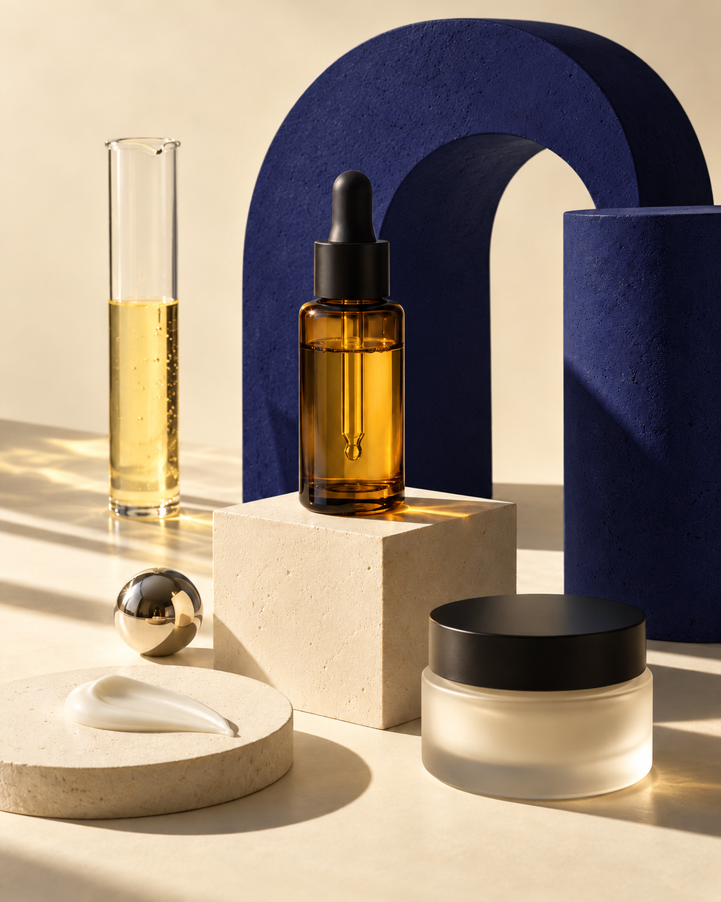
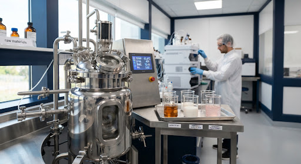

Share the vision
Your performance goals, texture benchmarks, actives, and packaging ambition.
OUT / FORMULATION BRIEFCOSMETIC SCIENCE, REIMAGINED
Bold ideas. Beautiful chemistry.
We turn your vision into high-performance formulations, made to feel different. And built to scale.

For the founders who see things differently. The formulators who ask better questions. The brands ready to make their mark.
We connect advanced cosmetic chemistry with an instinct for what feels extraordinary. From first bench sample to full-scale production, we’re your formulation partner.
Find your starting pointFour material disciplines. Endless ways to create something that’s unmistakably yours.
Targeted polysaccharide and oligopeptide matrices. Multi-depth hydration with a velvet cushion and a beautifully clean finish.
FOR: HYDROSOL SERUMS / ESSENCES / RECOVERY BALMS
Explore this disciplineCeramides, phytosterols, and fatty acids arranged in lamellar networks inspired by the skin’s own lipid structure. Rich slip, with a second-skin finish.
FOR: BARRIER CREAMS / NIGHT TREATMENTS / RICH LIPIDS
Explore this disciplineTextures that transform on contact. Thixotropic and shear-thinning systems move from butter to water-break, or delicate milk to a luminous skin glaze.
FOR: WATER-BREAK GELS / SERUM-CRÈMES / TINTED MILKS
Explore this disciplineSulfate-free amino-acid and polyglucoside systems, designed for dense micro-cushion lather and a gentle cleansing experience.
FOR: LOW-pH CLEANSERS / CLARIFYING SCALP WASHES
Explore this disciplineA blank page. A promising prototype. A ready-to-scale formula. There’s a way forward.
Original chemistry, benchmark development, preservative challenge testing, and accelerated stability.
FROM AN IDEA TO A FORMULA 02 / EVOLVETranslate bench prototypes into production through rheological profiling and shear optimization.
FROM THE BENCH TO THE BATCH 03 / PRODUCEControlled manufacturing for high-viscosity balms, precision serums, and clinical lotions.
PRECISION AT EVERY SCALE 04 / LAUNCHFormulation, regulatory dossiers, primary packaging, filling, and batch release. All connected.
THE COMPLETE PICTURE
THE SCIENCE BEHIND THE SENSATION04 / THE SPACE TO MAKE IT HAPPEN
Creativity needs the right conditions. Ours are precisely controlled, meticulously monitored, and designed to take your formula further.
Positive-pressure, HEPA-filtered spaces. 316L stainless steel vessels. Validated clean-in-place cycles.
HPLC potency analysis, dynamic viscosity profiling, and spectrophotometric color verification.
Precision filling for airless pumps, droppers, and jars. Inline check-weighing and batch traceability.
Hydrosols. Serums. Micro-emulsions.
Barrier creams. Oil cleansers.
Light fluid mists to rich barrier creams.
Glass droppers, airless dispensers, aluminum tubes.
No black boxes. No missing pieces. A transparent development process, with a tangible outcome at every stage.
Your performance goals, texture benchmarks, actives, and packaging ambition.
OUT / FORMULATION BRIEFWe assess feasibility, ingredient synergy, processing, and regulatory scope.
OUT / FEASIBILITY REVIEWEvaluate bench prototypes, sensory performance, and packaging compatibility.
OUT / PROTOTYPES + TDSValidate stability and challenge tests. Agree specs, tolerances, and the batch record.
OUT / MASTER BATCH RECORDCleanroom compounding, in-process controls, and analytical release testing.
OUT / RELEASED BATCH + CoAStability follow-through, inventory planning, and consistent repeat production.
OUT / ONGOING CHEMIST SUPPORT07 / SCIENCE IN PRACTICE
A 15% vitamin C suspension. A persistent oxidation problem. A rethink of the carrier matrix and reactor kinetics.
A clinical skincare brand’s pilot formula showed separation and browning within six weeks. Babylon developed a bio-derived squalane and silica matrix, using vacuum micro-dispersion under an argon blanket.
Consecutive pilot batches underwent HPLC monitoring at seven-day intervals under accelerated 45°C stress testing.
REFERENCE / CS-2024-SKN-09
Active potency retained
after 12 weeks at 45°C
Verified oxidative
shelf life
Our senior chemists translate your performance goals, texture benchmarks, and ingredient philosophy into bench prototypes. Iterative samples come with technical dossiers, followed by stability profiling before commercial scale-up.
Custom formulation IP terms are agreed up front. Clients retain full IP rights to custom-engineered formulations upon completion of the contracted commercial milestones. We execute an NDA before exchanging confidential briefs.
Yes. We assess your batch sheets, validate shear profiles, and verify pilot runs before commercial sign-off. Request our formulation transfer checklist.
A lot release dossier with a Certificate of Analysis, microbiological results, and physical parameter verification, including pH, viscosity, and specific gravity. Our team can discuss the documentation required for your intended market.
09 / EVERY GREAT FORMULA STARTS WITH A CONVERSATION
Bring your ambition.
We’ll bring the chemistry.